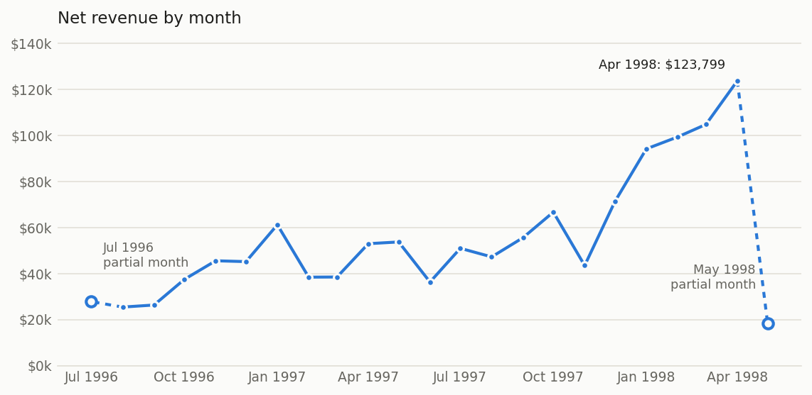
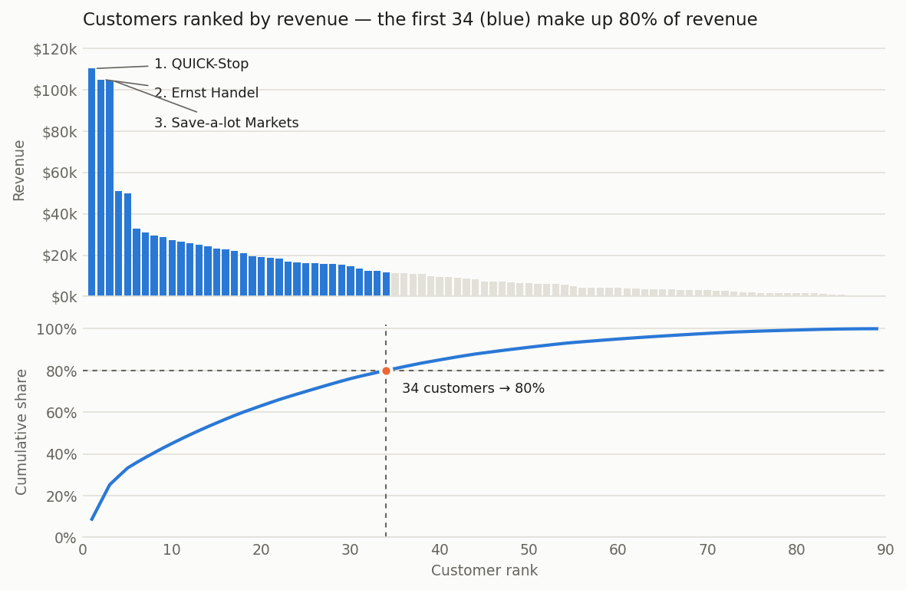

Northwind Sales Review
830 orders (2,155 order lines) placed between 1996-07-04 and 1998-05-06, totalling $1,265,793 in net revenue.
Code and data: github.com/mrazis-jpg/northwind-hw3
1. Is the business growing?
Why it matters
Growth sets how much stock to buy, how many people to staff and what to commit to suppliers. A manager needs to know whether recent sales are a lasting trend or a temporary spike before planning around them.
Approach
Net revenue for each order line is added up by the month the order was placed, giving 23 months. Growth compares the same complete months in consecutive years, so seasonal patterns cancel out; Jul 1996 and May 1998 are only partly covered by the data, so they are marked “partial” and left out. Order counts and average order value show whether growth comes from more orders or bigger ones.
Chart and tables

Same months, year over year
| Comparison | Orders (prior) | Orders (current) | Revenue (prior) | Revenue (current) | Revenue growth |
|---|---|---|---|---|---|
| Aug–Dec 1997 vs 1996 | 130 | 190 | $180,222 | $284,598 | +57.9% |
| Jan–Apr 1998 vs 1997 | 123 | 256 | $191,322 | $422,290 | +120.7% |
Month by month
| Month | Orders | Revenue | Avg order value | Change vs prior month |
|---|---|---|---|---|
| Jul 1996 (partial) | 22 | $27,862 | $1,266 | — |
| Aug 1996 | 25 | $25,485 | $1,019 | — |
| Sep 1996 | 23 | $26,381 | $1,147 | +3.5% |
| Oct 1996 | 26 | $37,516 | $1,443 | +42.2% |
| Nov 1996 | 25 | $45,600 | $1,824 | +21.5% |
| Dec 1996 | 31 | $45,240 | $1,459 | -0.8% |
| Jan 1997 | 33 | $61,258 | $1,856 | +35.4% |
| Feb 1997 | 29 | $38,484 | $1,327 | -37.2% |
| Mar 1997 | 30 | $38,547 | $1,285 | +0.2% |
| Apr 1997 | 31 | $53,033 | $1,711 | +37.6% |
| May 1997 | 32 | $53,781 | $1,681 | +1.4% |
| Jun 1997 | 30 | $36,363 | $1,212 | -32.4% |
| Jul 1997 | 33 | $51,021 | $1,546 | +40.3% |
| Aug 1997 | 33 | $47,288 | $1,433 | -7.3% |
| Sep 1997 | 37 | $55,629 | $1,503 | +17.6% |
| Oct 1997 | 38 | $66,749 | $1,757 | +20.0% |
| Nov 1997 | 34 | $43,534 | $1,280 | -34.8% |
| Dec 1997 | 48 | $71,398 | $1,487 | +64.0% |
| Jan 1998 | 55 | $94,222 | $1,713 | +32.0% |
| Feb 1998 | 54 | $99,415 | $1,841 | +5.5% |
| Mar 1998 | 73 | $104,854 | $1,436 | +5.5% |
| Apr 1998 | 74 | $123,799 | $1,673 | +18.1% |
| May 1998 (partial) | 14 | $18,334 | $1,310 | — |
Main finding
For Aug–Dec 1997 vs 1996, revenue grew 57.9% ($180,222 → $284,598). For Jan–Apr 1998 vs 1997, revenue grew 120.7% ($191,322 → $422,290). Over Jan–Apr 1998 vs 1997, the number of orders changed by +108.1% (123 → 256) and average order value by +6.1% ($1,555 → $1,650), so most of the change comes from the number of orders. The best complete month was April 1998 at $123,799.
Business implication
- Plan to the current run rate, not last year’s. In the latest comparison (Jan–Apr 1998 vs 1997), revenue averaged $105,573 a month against $47,830 a year earlier. Base purchasing, supplier commitments and staffing on the current level.
- Add capacity where the growth is. Because growth comes mainly from the number of orders, add order-handling and shipping capacity rather than relying on bigger orders. 21 orders placed since 1998-04-08 have not shipped yet; check that fulfilment is keeping up.
- Judge each month against the same month last year. Month-to-month changes ranged from -37.2% to +64.0%, so a single weak month is not a reason to react.
2. Which products and categories bring in the money?
Why it matters
Knowing which products and categories earn the revenue tells a manager where to focus stock, promotions and supplier negotiations, and which losses would hurt most.
Approach
Net revenue is added up for each of the 8 categories and for each product, then ranked, with each one’s share of total revenue and the running (cumulative) share. Products marked discontinued in the product list are flagged.
The rankings are shown as tables rather than a chart because the point is exact order and share: a table puts rank, revenue, share, cumulative share and discontinued status side by side, while bars of similar length are hard to tell apart. For example, Tarte au sucre and Camembert Pierrot (ranks 4 and 5) differ by only $409.
Tables
Revenue by category
| Category | Products | Units sold | Revenue | Share |
|---|---|---|---|---|
| Beverages | 12 | 9,532 | $267,868 | 21.2% |
| Dairy Products | 10 | 9,149 | $234,507 | 18.5% |
| Confections | 13 | 7,906 | $167,357 | 13.2% |
| Meat/Poultry | 6 | 4,199 | $163,022 | 12.9% |
| Seafood | 12 | 7,681 | $131,262 | 10.4% |
| Condiments | 12 | 5,298 | $106,047 | 8.4% |
| Produce | 5 | 2,990 | $99,985 | 7.9% |
| Grains/Cereals | 7 | 4,562 | $95,745 | 7.6% |
Top 10 products
| Rank | Product | Category | Units sold | Revenue | Share | Cumulative share | Discontinued |
|---|---|---|---|---|---|---|---|
| 1 | Côte de Blaye | Beverages | 623 | $141,397 | 11.2% | 11.2% | |
| 2 | Thüringer Rostbratwurst | Meat/Poultry | 746 | $80,369 | 6.3% | 17.5% | Yes |
| 3 | Raclette Courdavault | Dairy Products | 1,496 | $71,156 | 5.6% | 23.1% | |
| 4 | Tarte au sucre | Confections | 1,083 | $47,235 | 3.7% | 26.9% | |
| 5 | Camembert Pierrot | Dairy Products | 1,577 | $46,825 | 3.7% | 30.6% | |
| 6 | Gnocchi di nonna Alice | Grains/Cereals | 1,263 | $42,593 | 3.4% | 33.9% | |
| 7 | Manjimup Dried Apples | Produce | 886 | $41,820 | 3.3% | 37.2% | |
| 8 | Alice Mutton | Meat/Poultry | 978 | $32,698 | 2.6% | 39.8% | Yes |
| 9 | Carnarvon Tigers | Seafood | 539 | $29,172 | 2.3% | 42.1% | |
| 10 | Rössle Sauerkraut | Produce | 640 | $25,697 | 2.0% | 44.2% | Yes |
Main finding
Beverages is the largest category with 21.2% of revenue; the top two categories together make up 39.7%. The top 10 products alone account for 44.2% of all revenue, and Côte de Blaye by itself brings in 11.2%. 3 of the top 10 are marked discontinued: Thüringer Rostbratwurst, Alice Mutton and Rössle Sauerkraut.
Business implication
- Protect the best seller. Make sure Côte de Blaye (Beverages, $141,397) never runs out of stock, and secure its supply terms. It earns 1.8 times the revenue of the next product, Thüringer Rostbratwurst.
- Replace the discontinued top sellers now. Thüringer Rostbratwurst, Alice Mutton and Rössle Sauerkraut brought in $138,764 (11.0% of revenue). Find replacement products in Meat/Poultry and Produce and move their customers over before remaining stock sells out.
- Review the weakest categories. Produce and Grains/Cereals together make up only 15.5% of revenue. Decide whether to promote them or trim their range and free up stock and supplier effort for Beverages.
3. How dependent are we on a few customers?
Why it matters
When a few customers supply most of the revenue, losing one of them can wipe out a year’s growth, and those customers gain leverage over prices and terms. A manager needs to know how exposed the business is and to whom.
Approach
Net revenue is added up for each of the 89 customers who ordered, then customers are ranked from largest to smallest. The running share shows how many customers it takes to reach 50% and 80% of revenue (a Pareto analysis). Each top customer’s last order date shows whether they are still active. Orders whose shipping details point to a different customer are checked and reported.
Chart and tables

Concentration summary
| Measure | Value |
|---|---|
| Top customer: share of revenue | 8.7% |
| Top 5 customers: share of revenue | 33.2% |
| Top 10 customers: share of revenue | 45.0% |
| Top 20% of customers (18): share of revenue | 60.1% |
| Customers needed to reach 50% of revenue | 13 |
| Customers needed to reach 80% of revenue | 34 |
| Customers with at least one order | 89 |
| Customers with no orders | 2 |
Top 10 customers
| Rank | Customer | Country | Orders | Revenue | Share | Cumulative share | Last order |
|---|---|---|---|---|---|---|---|
| 1 | QUICK-Stop | Germany | 28 | $110,277 | 8.7% | 8.7% | 1998-04-14 |
| 2 | Ernst Handel | Austria | 30 | $104,875 | 8.3% | 17.0% | 1998-05-05 |
| 3 | Save-a-lot Markets | USA | 31 | $104,362 | 8.2% | 25.2% | 1998-05-01 |
| 4 | Rattlesnake Canyon Grocery | USA | 18 | $51,098 | 4.0% | 29.3% | 1998-05-06 |
| 5 | Hungry Owl All-Night Grocers | Ireland | 19 | $49,980 | 3.9% | 33.2% | 1998-04-30 |
| 6 | Hanari Carnes | Brazil | 14 | $32,841 | 2.6% | 35.8% | 1998-04-27 |
| 7 | Königlich Essen | Germany | 14 | $30,908 | 2.4% | 38.3% | 1998-04-16 |
| 8 | Folk och fä HB | Sweden | 19 | $29,568 | 2.3% | 40.6% | 1998-04-27 |
| 9 | Mère Paillarde | Canada | 13 | $28,872 | 2.3% | 42.9% | 1997-10-30 |
| 10 | White Clover Markets | USA | 14 | $27,364 | 2.2% | 45.0% | 1998-05-01 |
Data caveat: 4 orders (10248, 10249, 10260, 10808) ship to a different company and country than the customer recorded on them, so their customer ID may be wrong. They are counted under the recorded customer; together they are $5,219 (0.4% of revenue), too little to change the picture.
Main finding
The top three customers, QUICK-Stop, Ernst Handel and Save-a-lot Markets, bring in 25.2% of revenue between them, more than the other 7 customers in the top 10 combined (19.8%). The top 10 bring in 45.0%, and 34 of 89 ordering customers make up 80%.
Business implication
- Treat QUICK-Stop, Ernst Handel and Save-a-lot Markets as key accounts. Give each a named account manager, review their orders monthly and agree supply and pricing terms that make them less likely to leave. Losing any one of them would cost about 8.2%–8.7% of revenue.
- Reduce the dependence by growing the next tier. Customers ranked 4 to 34 each bring in at most $51,098. Target them with promotions and sales visits, and track the top-three share (now 25.2%) each quarter as the measure of progress.
- Call top customers who have gone quiet. Mère Paillarde (last order 1997-10-30) has not ordered in over 90 days before the end of the data.
- Follow up on registered customers who never ordered. 2 customers in the database have no orders at all.
- Correct the customer on 4 orders whose shipping details point elsewhere, so account reviews use accurate figures.